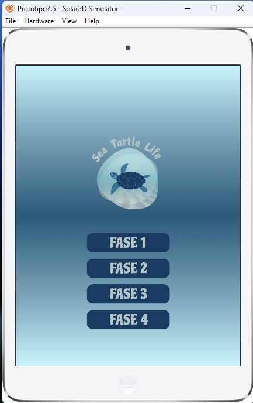
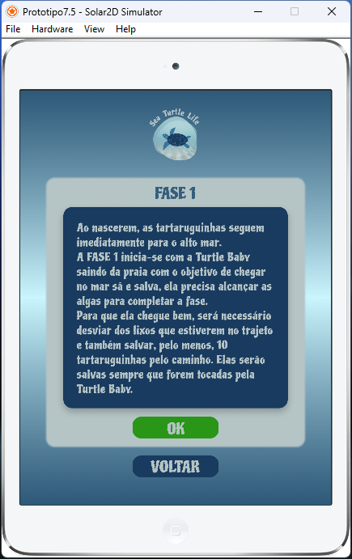

Projeto Final de programação em LUA, com a intenção de aplicar todo o conhecimento adquirido durante as aulas, este projeto simula um jogo completo e original feito em equipe:
O jogo leva em consideração os ODS, saiba mais sobre os ODS Aqui!
O escolhido pela equipe foi o Objetivo 14. Conservação e uso sustentável dos oceanos, dos mares e dos recursos marinhos para o desenvolvimento sustentável
Com base nele criamos um jogo onde seguimos o ciclo de vida de uma tartaruga marinha, desde seu nascimento nas areias da praia, onde ela precisa desviar do lixo jogado no chão e levar suas irmãzinhas para o oceano em segurança; sua fase adultaonde ela deve se alimentar de águas-vivas e evitar ingerir sacolas plásticas; encontrar seu parceiro para o acaslamento; e retornar a prai para depositar seus ovos.
